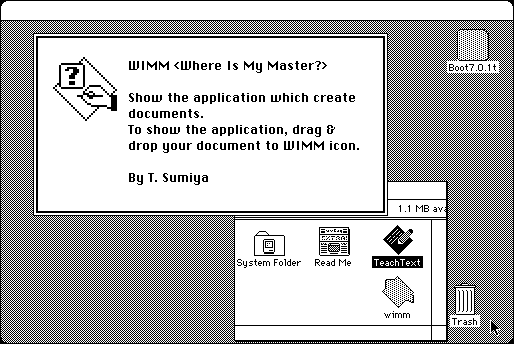

Download
wimm.zip (12K) Where Is My Master 1.0 repackaged into a zipped hfs disk image and checksum file. The disk image can be mounted with Mini vMac.
wimm.hqx (12K) Where Is My Master 1.0 in the original format.
copyright: Takahiro Sumiya
mod date: Aug 21, 1996
license: freeware
last known url
(gone)
Reveals “the creator of a file. If you drag and drop TeachText document onto WIMM icon, it's reveal TeachText application on Finder.”

If you find these downloads useful, please consider helping the Gryphel Project, which hosts them.
Here are the md5 checksums for the downloads, signed with Gryphel Key 5:
--------- GRY SIGNED TEXT --------- 3228d6764668ac9177280f0657e3e4b9 wimm.zip 16ab153256d8fcb72fbd5caac7e8c091 wimm.hqx ------- BEGIN GRY SIGNATURE ------- Gry/4Xa8CFcUzxdN/HfOxdECVnfq5UksQAUeYxb5/PDUDsYabw6AObhMbszhiWwT Cu7VjzC0pyKVF9YR/85O/5ur3GcA7wm0X+DMK+yfELotIM6Q9bXnJVILNv4lXtct qpaLxU2z17l9G/MqsTOGCqEPn0giZbJqagkuPw204F25JgFS1qnhfmDFDy9t1Rhj -------- END GRY SIGNATURE --------